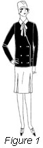
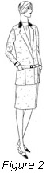
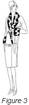
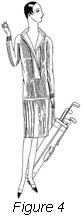
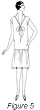
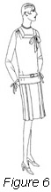
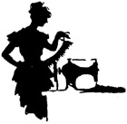

1926—The New-Way Course in Fashionable Clothes-Making
Lesson 44—Sports Apparel
Sports Apparel
Almost everyone today is very much interested in sports clothes. Years ago they were not known or thought of as they are today. In that day when anyone spoke of sports clothing they meant the rough and ready things that were collected for a hike, a mountain climb or a regular camping trip. It was the extremely heavy coat and wide skirt that was worn at that time. Perhaps by chance you have been fortunate enough to catch a glimpse of your mother's or some friend's bicycle suit, for you know that was one of the real sports of thirty years or more ago. If you have, you can readily see that sports clothes have undergone a big change in the last few years.
In fact sports clothes are not even thought of in that same sense today. If you want to put on a clever little dress designed along sports lines, and go on your weekly shopping trip to the stores—far be it from anyone to criticize you. Not only that but you will be wearing exactly the same kind of a costume that fifty percent or more of the people are wearing today.
I have many, many things to tell you about sports clothes. Plenty of little hints which I hope will help in planning your wardrobe, for of course, since you are able to make your own dresses you are going to want several attractive sports dresses or suits. Go down to the stores and price them, then at once take yourself to the yard goods section and price the material. This will only help to convince you that with your knowledge of sewing, the help of the best patterns and the very latest in material, you will be able to make far better dresses than you can buy for many times the money.
The term "Sports Clothes" is indeed a large one. It includes most of the clothes that well-dressed business and professional women wear during the day. There are many reasons why sports clothes have stayed popular so long. They are practical, easy to make, easy to wear and easy to clean. What more could one ask? However, there are several other features. They slip under a coat easily and are appropriate for street wear with or without a warp. Like the small, close-fitting hat which is worn so much today, sports clothes have a certain quality that fits them specially for street and office wear.
I would like to give you a definition of sports clothes, but this is a rather hard thing to do. Most smart informal day-time clothes may be placed under this general head. This type of costume may be worn to the office, to the golf links, to the matinee, if desired, or to all the intermediate daytime places where women go. The particular quality which really makes them sports clothes, is their trim, neat and usually quite plain appearance.
A successful sports dress never looks trimmed. It may have bands of tucking or trimming of the same material, but should never be over-trimmed. This at once takes the dress out of the class of real sports clothes. There are certain trimmings which are characteristic of this type of dress. These are bound buttonholes, rows of buttons, facing of contrasting colors, belts of leather or silk ties.
The sports department of many of the stores give over a large section to two-piece jersey dresses. Here hundreds of women who are good sewers, linger just long enough to "borrow" some of the ideas used on these ready-made dresses. There are styles for the office, for the tennis court, and some a little more elaborate, though still in the sports class, for afternoon wear.
Here I must take a minute to tell you something very important. Large women should never wear a light-weight clinging material for it hugs the figure too tightly. Only the slender boyish figure should wear jersey, and it looks best in the extreme untrimmed style. There is no objection to a crepe de chine collar and cuffs and a few buttons, but anything beyond this is considered overdone on a jersey dress.
I would say that the most satisfactory sports dress for the woman who sits at a desk is a simple frock of crepe de chine or flat crepe, if you prefer. This dress should have long, well-cut sleeves, with a neat tight cuff at the wrist. Of course, if you prefer the short sleeve and you find it more comfortable, there is nothing to prevent you wearing this kind of sleeve. Buttons and bound buttonholes are a most satisfactory decoration. There may be plaits in the skirt. A neat fitting collar may be worn high or low as you like.
Materials for Sports Clothes
Jersey is greatly admired for the simple sport frock. This comes in different weights, and by combining a thin cashmere jersey with a heavier quality of a silky appearance, most striking creations are obtained. Other favorite materials are kasha cloth, flannel, frisca, tweeds, crepe de chine, tub silks and many novelty materials. Plain fabrics are used a great deal, but combinations of plain and striped or plain and checked material are also very neat. The short jacket and skirt are indeed very pretty. Fig. 1 shows a very attractive sports outfit. The costume may be worn with or without the jacket. when the jacket is removed we had a neat over-blouse of crepe de chine, worn rather high at the neck with a smart tie which makes a most attractive finish. This suit would be neat made of flannel, and could be worn for many occasions.
Colors for Sports Clothes
As to colors, here again any color you like and can wear well will be appropriate for the sports costume. While some of the darker shades are meeting with approval, there is a decided liking for the bright hues. Royal blue, scarlet and greens are favorites, as well as beige, coral, grays and other colors. Some of the most attractive dresses are made from striped or barred jerseys. Occasionally there is a clever weaving of silk which gives a decided richness to the material. Metal threads, woven to form stripe effects in jersey dresses are most pleasing.
The brown or gray mixed tweed is very popular. Fig. 2 shows a neat suit made of this material. A suit of this kind is very useful, and when carefully made, looks well for many occasions.
Classes of Sports Dresses
There are at least two classes for sports dresses. One is the one-piece dress and the other the two-piece type. Both are very popular and one may be preferred this season and the other the next. In many cases the sports dress is made in two pieces and of two materials. Formerly we called the two-piece costume—particularly in different materials, the waist and skirt. Nowadays nobody would think of doing this for the two-piece creations are just as much one frock as if scissors and fabrics had not entered into the contest at all. They are sold and worn as one dress.
When and Where to Wear Sports Clothes
Today sports clothes form a very large and important part of our wardrobe. From dawn to dark sports clothes may be worn, and for almost all occasions will be very appropriate. They may be worn for hiking, at home, at the country club, or for street wear. With the exception of formal afternoon, and, of course, evening affairs, the sports dress is always in good taste. A person always feels correctly dressed for all daytime occasions if the costume belongs to this simple, rather tailored type.
Of course, there are all kinds of sports dresses, some are more suitable for one occasion than another. You will have to use your own good judgment when making your sports clothes.
Sport Coats
Look about you when you have the time, and you will find that the sports mode is the ruling factor in the world of daytime fashions. To be sure there are plenty of other types of dresses, but nevertheless the sports costume has been found so useful and comfortable that it is the costume of the day.
Hardly a single coat can be found but what owes its real smart appeal to the sports clothes influence. Fig. 3 is an excellent example of this type. Many of the coats are made with raglan sleeves, which give that flat, fitted line to the shoulder. This type of sleeve is seen in the three-quarter length coats as well as the full length.
Some seasons short and long capes are worn for sports wear, but never quite so much as the coats. These coats are made of flannel, kasha, homespun or tweeds, and are inclined toward the belted variety.
Accessories
Of course, the sports hat has become very popular, so much so in fact that almost everyone wears hats that border on this general class. There are styles for every woman except the one who has a great deal of hair. You see sports hats are usually rather small, so the person with an abundance of hair finds a little trouble in wearing this kind of hat. If correctly chosen, that is of neutral colors, it is very practical and wears well. Do not make the mistakes of wearing a "dress hat" with a sports costume. This is an inexcusable error and must be avoided.
Sport shoes may be had in difference colors depending on the type of costume they are to be worn with. They should be of calf skin rather than kid, unless worn with a "dressy" sport costume. The heels should be low or medium, but never select a shoe with a high heel to be worn with a strictly sport costume.
A leather belt or a scarf is often worn with a sport costume. Outside of these two articles the dress is without decoration, except the trimming of the dress itself. To be sure, beads are sometimes added, and look well on some types of sport costumes. Choose beads carefully and, I should like to add, sparingly unless you need them to change an otherwise unbecoming neckline.
Sports Clothes for Golfing
When women first began to play golf it was thought that any old clothes that happened to be past the time of usefulness for most occasions would be good enough and suitable for golf. However, opinions have changed, and now the woman golfer selects her clothes as carefully as she would the playing part of her outfit.
No hard and fast rule can be laid down as to how a player should dress. This is almost impossible because individual styles and figures must be considered, but there are certain things that must be avoided, and one of the most important of these is the wide skirt. If you have ever played golf you will know that comfort is essential, and no woman can do justice to herself or to the game if she is worried by the flapping of a wide skirt while she is playing. On the other hand a very narrow skirt should not be chosen, for it too will interfere with the game. So you see care and thought must be given to the selection of the golf costume.
Many people prefer the knitted sports dress for golfing. Fig. 4 is an excellent example of this kind of costume. It may be obtained in any color preferred. The wool knitted dress is nice for cool weather, while the silk knitted suit or dress is much more comfortable on warm days. Most golfing costumes belong tot he two-piece variety, although one-piece frocks are equally correct.
The skirt, blouse and sweater are very popular. The blouse usually has collars and cuffs which serve as a finish at the neck and sleeves. This not only gives a neat appearance but is sanitary, for the blouse launders well, and keeps the woolen sweater from the skin.
Care must be taken that the collar to your golf costume is high in the back. This not only looks better but keeps one from getting sunburned as well.
In order to have sufficient width to the skirt, yet remember it must not be too wide, gathers or plaits may be placed at the sides. The camisole top and the elastic waist band are both very satisfactory.
For summer a favorite golfing frock is made of Japanese silk. It is usually made with pearl buttons on the convertible collar and down one side of the blouse. The skirt of the dress may have plaits at the side, front or on both sides.
A golf costume similar to Fig. 1 is becoming to many people, but there are few players who are able to play the game in this kind of a costume. Any article of dress of which the player is conscious at any time during the game must be avoided. So you see the coat is liable to interfere with the freedom of the arms.
Shoes and stockings enter into the golfers costume, and the comfort must be considered as well as the appearance. Wool stockings are sometimes worn, and they may be either plain or in various designs. Cashmere stockings are much more suitable than silk, if you find you do not care to wear the heavy wool hose. Nothing is more tiring to the feet than thin stockings, especially when the course is sandy and the weather hot.
The shoes usually worn for golf are heavy oxfords of black or tan with a flat one-inch heel. The brown comes in two tones, and it is often possible to get the oxford with the loose flap that covers the lacing and prevents the sand from getting in, as well as prevents the grass from catching in the strings.
Hats are best with turn down brims for these shield the eyes. These hats may be of felt or straw depending on the season. However, they are usually very plain, the only trimming being a grosgrain ribbon or bow.
Sports Clothes for Tennis
The one-piece dress is worn a great deal by people who enjoy playing tennis. Of course, the two piece kind is perfectly correct if the players prefer this type. The dress should be designed for comfort in every way, for surely no one can be more active than the person who darts around the tennis court. Sleeveless frocks help in the swing of the arm, and the one-piece kind does not pull at the skirt band or show a camisole lining when the arms are raised.
Fig. 5 is a very attractive dress and could be worn for playing tennis or for almost any occasion where a sport dress would be appropriate. It has the appearance of a two-piece dress, but really is made in one.
Sports Clothes for Tramping and Climbing
For the person who likes to hike and climb mountains, the approved outfit is the knicker suit, in fact, it is an acknowledged necessity. Skirts are not only a nuisance, but are actually dangerous in climbing. For this very reason the knicker suits have become just as popular for hiking and tramping as the riding habit is for people who enjoy horseback riding.
Knickers insure freedom and are indeed much better than the cumbersome skirt. The bloomers or knickers should not be made full, for these are almost as dangerous as a skirt.
It is possible to purchase patterns for the entire hiking costume—that is the knickers and sport skirt with long or short sleeves and the coat which matches the knickers. This suit may be made of tweed or khaki. The shirt may be made of flannel or of a heavy cotton material. The shoes worn for hiking should by all means be very comfortable and be sure they are large enough, for nothing could spoil an otherwise delightful hiking trip quicker than uncomfortable shoes. Tan or brown footwear is by far the best for it does not show the dust so much as black, then too the tan seems to stand the general wear and tear better than black—coming back at the end of the trip in much better condition.
The hat usually chosen for this kind of wear is made of tweed, felt or khaki. It has a rolled brim which may be either turned up or down as the wearer prefers.
One of the important things to consider when planning sport clothes, no matter for what occasion, is to have them comfortable as well as attractive. If you are going on a picnic you cannot have a good time if your dress, hat or shoes are not comfortable.
Now I am going to give you complete directions for making one kind of sports dress. Fig. 6 shows a dress that would be appropriate for many sports affairs. It is a one-piece dress, though it has somewhat the effect of the two-piece costume. It could easily be made this way, by placing the skirt on a lining, and the upper part would appear as an overblouse. Follow these directions very carefully and you should have no trouble in making this dress.
- Choose the material carefully. It may be of crepe de chine, if you desire. Jersey would be pretty, or two shades of linen.
- If the material is wrinkled, press it before beginning to work.
- Become acquainted with the parts of your pattern and alter it if necessary.
- Fold the material lengthwise.
- Place pattern on material being careful to arrange it so as to use the least goods possible.
- Cut material, being sure to cut all notches and mark plaits with tailors' chalk or tailors' tacks.
- You will notice that there are two box plaits on each side of center front. These must be carefully marked, for uneven plaits are not attractive.
- Make side seams in skirt. Use French seam if the material is not too heavy.
- Lay plaits in material and baste in place.
- Baste shoulders and side seams of upper part of dress.
- Try on to make certain that it fits properly. Make any necessary alterations.
- Care must be taken that the gathers at the shoulder seams are well distributed.
- Finish seams.
- Baste upper and lower part of dress. To do this make a one-half inch turning in the upper part and baste to skirt.
- Fit dress again to be sure the upper part does not sag at the sides.
- Hang skirt and pin carefully.
- Stitch upper and lower part of dress.
- Baste hem and sew by hand.
- Join seam of neck band and sew to neck edge.
- Sew as a facing to the right side of the dress.
- Miter corners carefully and catch in place so that the stitches cannot be seen.
- A ribbon may be run through this facing or sewed in place when the dress is completed.
- Join seams of sleeves.
- Make very narrow hemmed or continuous placket in sleeve at seam. Make this about tow and one-half inches long.
- Sew sleeve ties to sleeve. This may be bound to sleeve or put on as an extension facing and the ends of ties stitched together.
- Baste sleeves to armhole.
- Fit sleeve and stitch in place.
- A belt may be made of the material, or a leather belt held in place by small strips of material neatly placed at the sides. These little pieces are made similar to the ones made for the house dress.
This completes another type of dress. Aren't we learning fast? In fact, now you are able to make many different kinds of dresses and should have no trouble with any of them. Of course, new problems are always coming up, but with the knowledge you have already gained, it will not be hard for you to figure them out.
Sweaters, Scarfs and Hats
There a few other things about sports apparel which I would like to tell you about. Some very pretty garments may be made from different kinds of yarns. If you are handy with your crochet hook or knitting needles you will be able to make sweaters of different kinds.
Of course, you know that sweaters play a very important part in sports apparel. They may be made of all one color or several colors may be combined. They may be made with or without collars, turn back cuffs or plain, just as you like.
If the sweater is crocheted it may be made very loose and look well. A sweater of this kind is especially nice for warm summer days to wear with a white or colored silk skirt. If you do not care for sweaters made of woolen yarn, it is possible to buy the silk yarns, and to be sure they make up very nicely.
The sweater may be made elaborate by means of a design knitted into the garment. This may be in one color yarn or many, just as you like; to be sure it is far more complicated to make than the sweater made of one kind of yarn, but if you want something really pretty, it is decidedly worth while.
If you are interested in crocheting or knitting a sweater, there are many places where you can get the pattern. Most all needlework magazines give these directions form time to time, and they are very easy to understand—if you are at all familiar with either knitting or crocheting.
I know people who enjoy making sweaters during the long winter months when they are not able to get out-of-doors so much. It is much more pleasant winter work than summer, for in warm weather wool material is a little hard to work on. The ideal way is to make the sweater in the winter time and enjoy wearing it in the summer.
There are so many different kinds of sweaters. Some are made sleeveless, while others have the long or short sleeve, just as Fashion decides. If the sleeveless type is made, a neat blouse of cotton or silk goes very well with it. Some sweaters are made to slip over the head, while others fasten down the front, or may be worn open disclosing a dainty, well-made blouse.
Children always love pretty sweaters and feel so dressed up when they are wearing one made in their favorite color. A little animal design may be knit into it or an initial or monogram applied.
Gay scarfs made of well chosen colors are also very pretty, and help to brighten the sport costume. It is possible to buy very fine yarns in pastel shades, and they make up very nicely. This makes a very light-weight, loosely-knitted scarf, and is really worn more for color than for any other purpose.
I have seen some very pretty coats knit of heavy yarn in a large block design, with collars and cuffs of knitting that resembles fur. This is very pretty to wear over thin summer dresses and is seen a great deal at a fashionable summer resorts. The yarn must be carefully chosen for if it is too fine the garment will stretch and will not be at all attractive or serviceable.
Hats are also made of yarn, and look very nice with the knit sports coat or sweater. They are not hard to make, and for anyone who enjoys knitting or crocheting, makes a pleasant pastime, and the result something well worth having.
I hope that you have enjoyed this lesson on Sports Apparel and are planning on making some of the pretty things. Write me sometime and tell me what you are making or planning to make. Then, I can't help but repeat, I am always so glad to help you with all of your dressmaking problems.
Lesson 44
Questions
- What type of trimming is appropriate for sports clothes?
- What materials are most appropriate for sports clothes?
- What are the two classes of sports dresses?
- What type of hat should never be worn with a sports costume?
- How may sufficient width be given to the golfing skirt?
- What are the usual characteristics of sports clothes?
- (a) What type of woman should avoid sports clothes made of jersey?
(b) Why? - Sports clothes are suitable for what occasions?
- What is the most suitable type of sports clothes for hiking and climbing
- Why should great care be taken when basting box plaits?